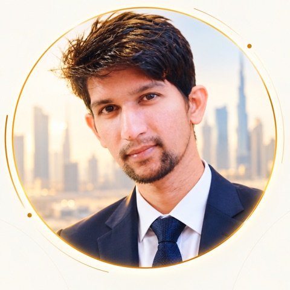
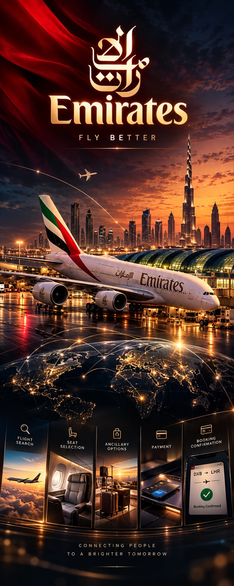
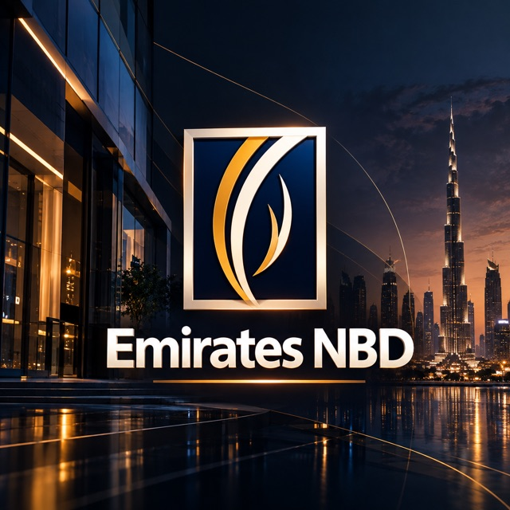
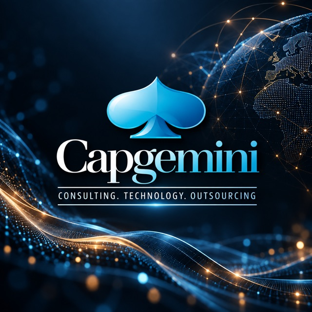
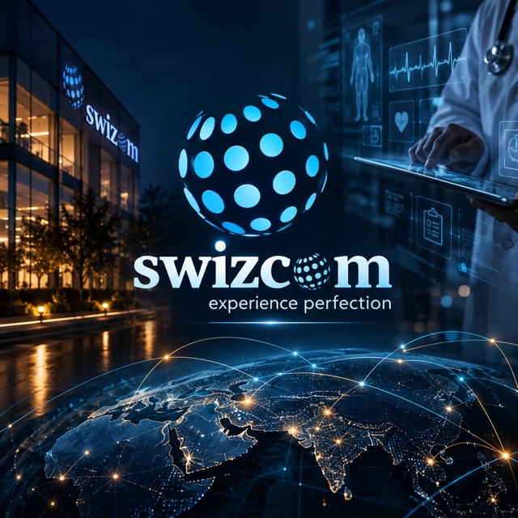
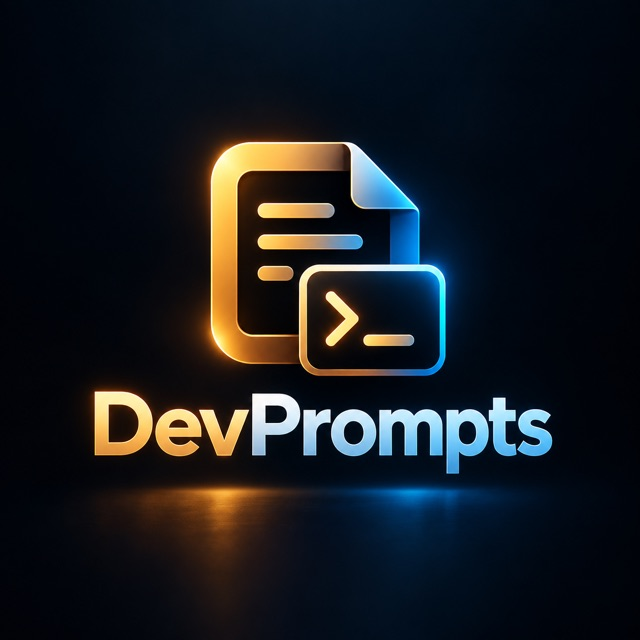
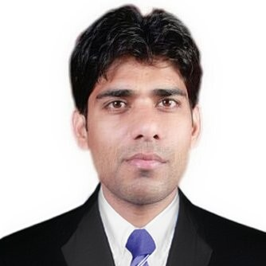
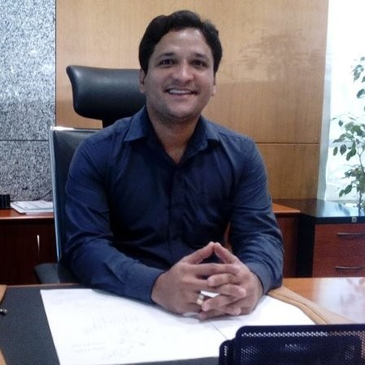
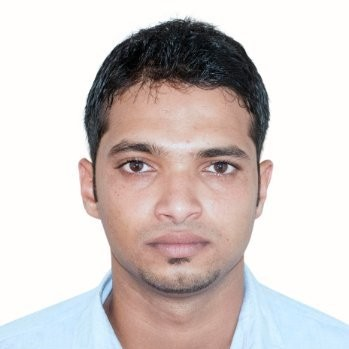

01 / AGENTS
Agentic systems
Design agents as software components that reason over context, select tools, collaborate with other agents and execute bounded workflows.
ReasonPlanTool useStateExecute

I design AI-native software platforms, agentic systems and enterprise architectures that connect models, knowledge, tools and engineering workflows.
My foundation is large-scale distributed systems. My current focus is using that foundation to engineer AI systems that can reason, retrieve knowledge, use tools, execute workflows and participate in the software lifecycle.
I build systems where AI does more than generate text.
The engineering problem is the system around the model: context, knowledge, tools, orchestration, state, governance, evaluation and delivery.
Design agents as software components that reason over context, select tools, collaborate with other agents and execute bounded workflows.
Combine repository structure, AST and call graphs, knowledge graphs and vector retrieval so agents can work with domain-specific engineering context.
Use Claude, Claude Code and agentic tooling as part of an engineering workflow rather than treating AI as a standalone chat interface.
ADLC is my approach to driving the software development lifecycle from business intent toward production using specialized agents, engineering knowledge, human checkpoints and automated delivery workflows.
I approach AI architecture as a distributed-systems problem: connect models to reliable context, governed tools and observable workflows.
Retrieve the right engineering evidence before asking an agent to act.
Give agents bounded actions with explicit contracts.
Persist workflow state, decisions and intermediate results.
Separate reasoning from permission to change systems.
Measure outputs and regressions rather than trusting generation.
The AI work is built on a long foundation of enterprise Java, distributed systems, microservices, event-driven architecture and production engineering.




A system for connecting business intent, product reasoning, architecture, planning, coding, testing and delivery through specialized AI agents, enterprise knowledge and human oversight.
Interactive repository visualization and code-intelligence platform for exploring code structure, symbols, relationships, dependencies and architecture through an interactive visual graph.
Domain-centric engineering knowledge architecture combining repositories, AST / call graphs, knowledge graphs and vector retrieval to provide agents with grounded software-system context.
Large-scale flight booking and ancillary ecosystem spanning search, passenger details, payment, reservation and fulfilment.
View project →Payments, transfers, loans, beneficiaries and enterprise integrations across a large online banking platform.
View project →
Agentic systems · Claude · Claude Code · MCP · RAG · Graph RAG · Tool use · Evaluation · AI-assisted development · LangChain4j
Neo4j · Qdrant · PGVector · knowledge graphs · AST / cAST · call graphs · engineering intelligence · provenance
Java 17 · Spring Boot · WebFlux · microservices · event-driven architecture · Solace · Kafka · RabbitMQ · CQRS
Docker · Kubernetes · AWS · CI/CD · GitLab · OpenTelemetry · Jaeger · Grafana · production observability
React · Next.js · TypeScript · REST APIs · PostgreSQL · MariaDB · Couchbase · secure enterprise integrations
Rust · local LLMs · Ollama · local RAG · agent orchestration · engineering knowledge platforms
| Period | Qualification | Institution |
|---|---|---|
| 2006 – 2011 | BE Computer Science Engineering | BIT, VTU University, Karnataka |
| 2002 – 2004 | Senior Secondary (10+2, PCM) | Cotton College, Guwahati |
| 1992 – 2002 | High School (10th) | Don Bosco High School, Guwahati |



Interested in AI engineering, agentic systems, enterprise architecture or AI-native software delivery?